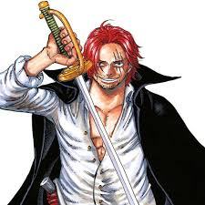

HISTORIA
RESUMEN
Embárcate en el viaje de tu vida con One Piece. La épica serie de anime creada por el renombrado mangaka Eiichiro Oda es un fenómeno global que ha cautivado los corazones de varias generaciones de fanáticos a lo largo de 25 años. Esta emocionante aventura en alta mar está llena de amistad inquebrantable, batallas épicas por la libertad y la búsqueda incesante de sueños. Acompaña a Monkey D. Luffy y su adorable tripulación pirata mientras descubren el verdadero significado del poder y la justicia. Monkey D. Luffy se niega a permitir que nada ni nadie se interponga en su camino para convertirse en el Rey de los Piratas. Con sus poderes otorgados por la sobrenatural Fruta del Diablo, el joven y enérgico pirata busca el tesoro legendario conocido como One Piece. Él trazará un rumbo hacia las traicioneras aguas de Grand Line y reclutará un grupo variopinto para conformar sus Piratas de Sombrero de Paja. ¡Este es un capitán que nunca echará anclas hasta que él y sus amigos alcancen sus sueños! One Piece cuenta con más de 1100 episodios. Actualmente en el arco de Egghead, los Sombrero de Paja por fin conocen al tan esperado Dr. Vegapunk en la Isla Egghead. En Crunchyroll se pueden ver todos los episodios subtitulados y también todos los doblados al inglés, y ya van más de 1000. Además, One Piece cuenta con 13 especiales de televisión y 15 películas, siendo la última, One Piece Film Red, la más taquillera de la franquicia. One Piece está producida por Toei Animation.

PERSONAJES
Monkey D. Luffy
Monkey D. Luffy (モンキー・Ｄ・ルフィ Monkī Dī Rufi?), más conocido como Luffy «Sombrero de Paja» (麦わらのルフィ Mugiwara no Rufi?), es el protagonista principal de la serie de manga y anime One Piece. Es el capitán y fundador de los Piratas de Sombrero de Paja así como un de los Cuatro Emperadores que gobiernan los mares del Nuevo Mundo. Comió una fruta del diablo llamada fruta Gomu Gomu, que le convirtió en un hombre de goma. Además de esto, posee varias habilidades que le hacen ser un pirata más que especial; un gran ejemplo de ello es la capacidad de usar el haoshoku haki ―que sólo lo posee una persona dentro de un millón― y poseer también los otros dos tipos de haki.
Roronoa Zoro
Nacido en el East Blue, Zoro es hijo de Tera y Roronoa Arashi, nieto de Shimotsuki Furiko y Roronoa Pinzoro, y sobrino nieto de Shimotsuki Ushimaru, lo que le convierte en descendiente matrilineal tanto de la familia Shimotsuki del País de Wano como del legendario samurái Shimotsuki Ryuma. Fue el primer miembro en unirse a la tripulación, y es considerado parte del Trío Monstruoso (怪物三人組 Kaibutsu San-ningumi?) junto a Luffy y Sanji. Su sueño es convertirse en el mejor espadachín del mundo. Zoro junto a su capitán, también es considerado uno de los Once Supernovas que forman parte de «la peor generación»
"God" Usopp

Usopp (ウソップ Usoppu?) es el francotirador de los Piratas de Sombrero de Paja y uno de los oficiales principales de la Gran Flota de Sombrero de Paja. Es el cuarto miembro de la tripulación y el tercero en unirse oficialmente. A pesar de abandonar la banda en el arco de Water 7, se volvió a unir en el arco del regreso a Water 7. Es proveniente de la villa Syrup en el East Blue. Ahí ejerció como capitán de los Piratas de Usopp, pero tras los eventos del arco de Villa Syrup, se unió a los Sombrero de Paja. Su sueño es convertirse en un valiente guerrero de los mares como su padre. Su recompensa actual es de Belly500.000.000.
Monkey D. Garp

Monkey D. Garp (モンキー・D・ガープ Monki Dī Gāpu?), más conocido por sus epítetos Garp el Puño (ゲンコツのガープ Genkotsu no Gāpu?) o el Héroe de la Marina (海軍の英雄 Kaigun no Eiyū?), es un vicealmirante del cuartel general de la Marina en calidad de instructor de nuevos reclutas extremadamente famoso y poderoso. Es el padre de Monkey D. Dragon, el abuelo paterno de Monkey D. Luffy y el abuelo adoptivo de Portgas D. Ace. Fue responsable de supervisar el nacimiento de Ace y criar a un joven Luffy, antes de confiarlos a ambos a la Familia Dadan.
"Red-Haired" Shanks
Shanks el Pelirrojo (赤髪あかがみのシャンクス Akagami no Shankusu?), es el capitán de los Piratas del Pelirrojo y uno de los Cuatro Emperadores que gobiernan el Nuevo Mundo. Fue, además, un miembro de la legendaria tripulación de Gol D. Roger, siendo la única banda que logró conquistar con éxito todo Grand Line. Es el hombre que inspiró a Luffy a seguir su sueño de ser el Rey de los Piratas,[15] y el que encontró la fruta Gomu Gomu que Luffy comió accidentalmente. Es también el padre adoptivo de Uta.
Nami "Cat Burglar"

Nami (ナミ Nami?), apodada Gata Ladrona (泥棒猫 Dorobō Neko?) es una pirata y la navegante de los Piratas del Sombrero de Paja , así como una de los oficiales principales de la Gran Flota de Sombrero de Paja. Es el tercer miembro de la tripulación y la segunda en unirse, haciéndolo oficialmente durante el arco de Arlong Park. Ella era anteriormente un miembro de los Piratas de Arlong e inicialmente se unió a los de Sombrero de Paja con el fin de robarles, pero se unió oficialmente tras rebelarse contra Arlong y su posterior derrota a manos de Luffy. Actualmente posee una recompensa de Belly366.000.000